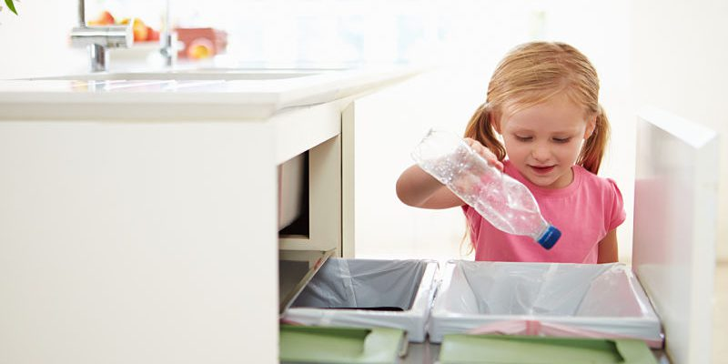
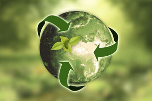
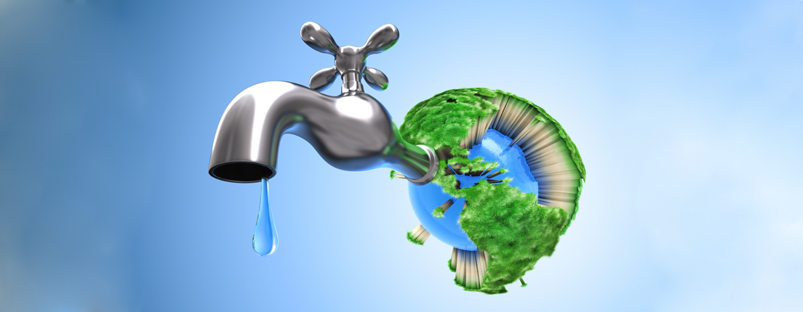

Acciones para cuidar el medio ambiente en casa

Cuidar el medioambiente no requiere grandes acciones, sino que desde tu propia casa puedes hacer muchos pequeños gestos para contribuir a su protección. Además, si tienes hijos, serás su referente, por lo que aprenderán viendo lo que haces e imitándolo.
La idea es que te conciencies tú y que enseñes a tus hijos principios y valores para cuidar el planeta en el que viven, los animales, los árboles y las plantas y todos los recursos naturales. Te proponemos varios consejos y acciones para cuidar el medio ambiente en casa.
Consejos y acciones para cuidar el medioambiente en casa
Te proponemos varios consejos sencillos y acciones para cuidar el medio ambiente en casa y transmitir valores positivos en ese sentido a tus hijos:
Separa la basura. Desde pequeños es bueno que los niños aprendan a separar los residuos para que se puedan reciclar. Enséñales qué se tira en cada cubo y por qué se debe hacer así.
Usa productos que puedan reutilizarse. Hay muchos productos que se pueden usar varias veces para proteger la naturaleza. Por ejemplo, utiliza servilletas de tela en lugar de servilletas de papel.

Apaga las luces. Parece obvio, pero no nos damos cuenta de la cantidad de veces que encendemos la luz de una habitación que no ocupamos. Acostumbra a tus hijos a apagar la luz y cuando te marches de casa comprueba que todo está apagado.
Consume frutas y verduras ecológicas. Los productos ecológicos cuidan el medio ambiente porque en su producción no se utilizan fertilizantes ni otros productos contaminantes.
Evita dejar los aparatos enchufados. Recuerda que los aparatos que están apagados pero siguen enchufados consumen energía, por lo que es importante desenchufarlos.
Cierra los grifos correctamente. Cuando no utilices el agua, cierra el grifo y controla que no existan fugas.
Utiliza el termostato. Tanto para la calefacción como para el aire acondicionado es necesario utilizar un termostato. El consumo de energía de la calefacción baja cuando reduces en un solo grado la temperatura, y lo mismo ocurre si aumentas la temperatura un grado en el aire acondicionado.

Muévete en transporte público. La contaminación en las grandes ciudades proviene en gran medida de los coches; utiliza el transporte público para desplazarte y ayudarás a cuidar la naturaleza.
Lleva tus propias bolsas al supermercado. Cada vez son más los supermercados que venden las bolsas de plástico para evitar su uso y fomentar el reciclado. Llévate tus propias bolsas al supermercado y podrás utilizarlas varias veces.
Aprovecha la luz natural. Para reducir el consumo de luz eléctrica, abre las ventanas y sube las persianas para que entre la luz del sol en tu casa.
Cambia las bombillas de tu casa. Las bombillas de bajo consumo se calientan menos, consumen menos energía, alumbran igual y duran más.
Recicla todo lo que puedas. Antes de tirar ropa, libros o juguetes, piensa si puedes darles una segunda oportunidad para evitar gastar y comprar todo nuevo. Ahorrarás dinero y protegerás la naturaleza.
Planta árboles. Los árboles producen oxígeno y son esenciales para la naturaleza, así que planta un árbol en tu casa o en la comunidad donde vives.
Como ves, son acciones pequeñas que facilitan el ahorro de energía, el reciclaje y el cuidado de los recursos naturales.
Cada vez más personas pierden su hogar a causa del cambio climático.